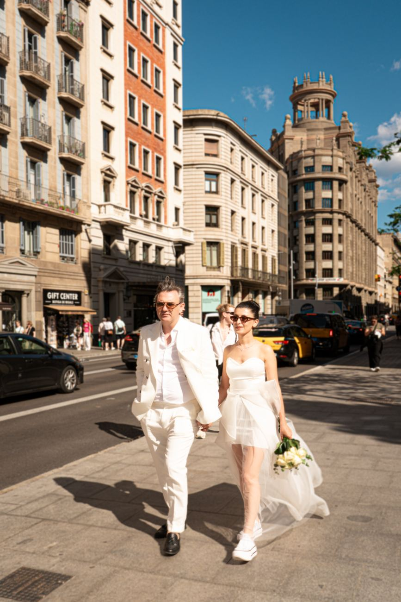

Booking a wedding photographer is one of the most important decisions you’ll make for your Barcelona wedding. But here’s what many couples don’t realize: t
Before you talk to any photographer, have these details ready:
You don’t need every detail finalized. But having a general sense of your day helps the photographer give you accurate advice and pricing.
Define Your Photography Priorities
Every couple values different things. Before your consultation, ask yourself: What matters most to you? - [ ] Artistic, editorial portraits (magazine-quality couple shots) - [ ] Documentary, candid moments (real emotions, unposed interactions) - [ ] Comprehensive coverage (every guest, every moment, nothing missed) - [ ] Specific locations (Park Güell, Gothic Quarter, Sitges, you have a vision) - [ ] Quick delivery (you want photos fast for social media or thank-you cards) - [ ] Album design (you want a physical heirloom, not just digital files) - [ ] Video/photo integration (you want seamless collaboration with your videographer) Rank your top 3 priorities. This helps the photographer understand what to emphasize and whether they’re the right fit.
Review Their Portfolio (Critically)
Don’t just scroll Instagram highlights. Look for: Full wedding galleries: - Do they have galleries from weddings similar to yours? (Same venue type, guest count, season) - Is the quality consistent from start to finish? (Getting ready through last dance) - How do they handle different lighting conditions? (Bright sun, dim churches, flash reception) Specific skills you need: - If you want Park Güell portraits, do they have examples? - If you’re having a church ceremony, can they handle low light? - If you want documentary candids, do their galleries show real moments? Editing style: - Is the color palette warm, cool, moody, bright? - Do skin tones look natural? - Is the style consistent, or does it vary wildly? Red flag: A portfolio with only 20 to 30 “best of” images and no full galleries.
Anyone can get lucky with a few shots. Consistency is what matters.
Prepare Your Questions
A consultation is a two-way interview. You’re evaluating the photographer, but they’re also evaluating whether you’re a good fit for their style and approach. Here are the questions that matter most:

“Can you show me a full gallery from a wedding similar to mine?”
This is the most important question. A highlight reel doesn’t tell you anything about consistency. Ask to see a full gallery, getting ready, ceremony, portraits, reception, from a wedding with a similar venue, size, or season. What to listen for: - Willingness to share full galleries (transparency) - Enthusiasm about finding a relevant example (preparedness) - Confidence in their consistency (professionalism)
“How would you describe your photography style?”
Listen for specificity, not buzzwords. “I’m a storyteller” tells you nothing. “I’m 70% documentary, 30% editorial, I capture real moments but guide portraits with gentle direction” tells you everything. What to listen for: - Clear articulation of their approach - Honesty about what they do well (and what they don’t) - Alignment with your priorities from Step 2
“How many Barcelona weddings have you photographed?”
Local knowledge matters. A photographer who knows Barcelona understands: - The best light at Park Güell at 7 PM vs. 10 AM - How to navigate Gothic Quarter crowds - Which venues have photography restrictions - How Barcelona’s late dinner culture affects timelines What to listen for: - Specific venue names and experiences - Knowledge of Barcelona’s unique logistics - Comfort with the city’s rhythm and culture
“Walk me through how you work on a wedding day.”
This reveals their process, personality, and professionalism. Do they: - Arrive early and scout? - Blend in or direct constantly? - Have a backup plan for equipment failure? - Coordinate with other vendors? What to listen for: - A clear, organized workflow - Adaptability and problem-solving - Respect for your experience (not just the photos)
“How do you handle low light or challenging conditions?”
Barcelona weddings often involve: - Dim church interiors - Evening receptions with ambient lighting - Sunset portraits that transition to darkness - Sudden weather changes What to listen for: - Specific equipment (fast lenses, quality flash, backup cameras) - Techniques (bounce flash, high ISO with modern cameras, natural light mastery) - Confidence, not hesitation
“What’s your approach to family formals?”
Family photos can be efficient and enjoyable, or they can be chaotic and stressful. Ask about: - How they organize large groups - How long they typically take - Whether they work from a shot list - How they handle family dynamics What to listen for: - Efficiency (20 minutes or less for standard combinations) - Organization (pre-planned shot list) - People skills (calm under family pressure)
“How many edited photos will we receive, and when?”
Be specific. “A few hundred” isn’t an answer. You want: - A range (e.g., “400 to 600 for 8 hours of coverage”) - A delivery timeline (e.g., “4 to 6 weeks for full gallery”) - Whether sneak peeks are included What to listen for: - Realistic timelines (not “2 weeks” for 800 photos, that’s impossible with quality editing) - Transparency about the editing process - Clear communication about what’s included
“What’s included in your packages, and what costs extra?”
Hidden fees are the fastest way to sour a photographer-client relationship. Ask about: - Hours of coverage - Second shooter - Engagement session - Travel fees (if your venue is outside Barcelona) - Album design and printing - Raw files - Overtime rates What to listen for: - Clear, upfront pricing - No vague “it depends” answers - A willingness to customize within reason
“Do you offer payment plans?”
Most professional photographers require a retainer (typically 30 to 50%) to secure your date, with the balance due before the wedding. Ask about: - Retainer percentage - Payment schedule - Cancellation and refund policy - Whether they accept credit cards or international transfers What to listen for: - Reasonable terms - Flexibility for international couples - Clear contract language
“What happens if you get sick or can’t make it?”
This is non-negotiable. Every professional photographer should have: - A backup photographer network - Equipment redundancy - Insurance - A clear contingency plan What to listen for: - Specific names of backup photographers - Equipment backup details - Insurance confirmation - Calm confidence (not nervous deflection)
“How do you back up our photos?”
Your wedding photos are irreplaceable. Ask about: - In-camera backup (dual memory cards) - Immediate backup after the wedding (within 24 hours) - Cloud storage - How long files are kept What to listen for: - Multiple backup systems - Fast turnaround on initial backup - Long-term file retention
“How do you work with videographers?”
If you have a videographer (or plan to hire one), this matters. A photographer who: - Communicates with the videographer beforehand - Coordinates angles and timing - Respects the videographer’s needs - Doesn’t compete for position What to listen for: - Positive, collaborative language - Experience working with videographers - Willingness to coordinate
“Can we give you a shot list or specific requests?”
A good photographer welcomes your input while maintaining artistic freedom. Ask about: - Must-have family combinations - Special details or heirlooms - Surprise moments you’re planning - Cultural or religious requirements What to listen for: - Openness to your vision - Confidence in their ability to deliver - Balance between your requests and their expertise
“What do you love most about photographing weddings?”
This reveals their motivation. Are they in it for: - The art? - The connection with couples? - The storytelling? - The business? What to listen for: - Genuine passion (not rehearsed sales pitch) - Alignment with your values - A reason that resonates with you
“Why should we choose you over another Barcelona photographer?”
This is the closing question. It forces them to articulate their unique value. What to listen for: - Specific skills, not generic claims - Honesty about their strengths and ideal clients - A reason that genuinely differentiates them
During the Consultation: What to Observe
Beyond the questions, pay attention to:
Their Communication Style
Do they listen more than they talk? Do they ask about your vision, or just sell their packages? Do they respond thoughtfully, or rush to the next topic?
Their Energy
Do they seem genuinely excited about your wedding? Do they have ideas and suggestions? Do you feel comfortable with them?
Their Professionalism
Are they punctual (if in-person) or prepared (if virtual)? Do they have a contract ready to review? Do they follow up promptly after the consultation?
The Gut Check
After the consultation, ask yourself: - Did I feel heard? Or did they just pitch their packages? - Did I see myself in their work? Or did it feel generic? - Would I enjoy spending 8 to 12 hours with this person on my wedding day? - Do I trust them to handle the unexpected?
The Comparison
If you’re consulting multiple photographers, compare:
The Red Flags
Walk away if: - They won’t show full galleries - They’re evasive about pricing or contracts - They badmouth other photographers - They pressure you to book immediately - They don’t have backup equipment or contingency plans - Their communication is slow or unprofessional before you’ve even booked
Before the Call
You’ll receive a brief questionnaire about your wedding details and priorities I’ll review your answers and prepare relevant galleries and examples
During the Call (30 to 45 minutes)
Your story: I want to hear about you, how you met, what you love about each other, what your wedding vision is Your venue: I’ll share my experience at your venue (or similar venues) and show you relevant galleries Your priorities: We’ll discuss what matters most to you and how I can deliver it
My approach: I’ll walk you through how I work on a wedding day, my equipment, my backup plans
Your questions: I’ll answer everything on your list, and probably some you haven’t thought of yet Next steps: If we’re a good fit, I’ll send a contract and retainer information. If not, I’ll recommend other photographers who might be a better match
After the Call
You’ll receive a follow-up email within 24 hours with: A summary of what we discussed Relevant galleries and resources A custom quote based on your needs Contract and retainer information (if you want to move forward)
Ready for Your Consultation?
If you’re planning a Barcelona wedding and want to have a real conversation about your photography, not a sales pitch, not a generic package overview, let’s schedule a call. Come prepared with your questions, your vision, and your priorities. I’ll come prepared with my experience, my galleries, and my honest perspective on how we can create something beautiful together. The right photographer isn’t just skilled, they’re someone you trust, connect with, and feel excited to spend your wedding day alongside. Let’s find out if that’s me.
How long should a wedding photography consultation last? 30 to 45 minutes is ideal. Long enough to cover the essentials, short enough to respect everyone’s time. My consultations typically run 45 minutes because I want to really understand your vision.
Should both partners attend the consultation? Yes, if possible. Wedding photography is a joint decision, and both partners should feel comfortable with the photographer. If one partner can’t make it, I recommend a follow-up call with the other partner.
Can we do the consultation virtually? Absolutely. Most of my consultations are video calls, especially for international couples. I use Zoom, Google Meet, or WhatsApp video, whatever works for you.
What if we’re not ready to book yet? No pressure. I encourage couples to consult with multiple photographers, compare styles and personalities, and make a decision when they’re ready. I don’t use high-pressure tactics, ever.
Can we meet in person before booking? Of course. If you’re in Barcelona (or visiting), I’d love to meet for coffee or a drink. There’s no substitute for face-to-face connection.
What if we decide you’re not the right fit? That’s completely okay. Not every photographer is right for every couple. If I feel I’m not the best match for your vision, I’ll tell you honestly and recommend colleagues who might be a better fit.
Detail | Why It Matters Date | Determines availability, the first question every photographer asks Venue(s) | Affects logistics, travel time, lighting knowledge, pricing Guest count | Influences coverage needs and whether a second shooter is recommended Ceremony time | Determines portrait timing and golden hour opportunities Approximate timeline | Helps the photographer assess coverage hours needed Budget range | Allows honest discussion about what’s possible Factor | Photographer A | Photographer B | Photographer C Style alignment | | | Experience with your venue | | | Package value | | | Personality fit | | | Responsiveness | | | Gut feeling | | |